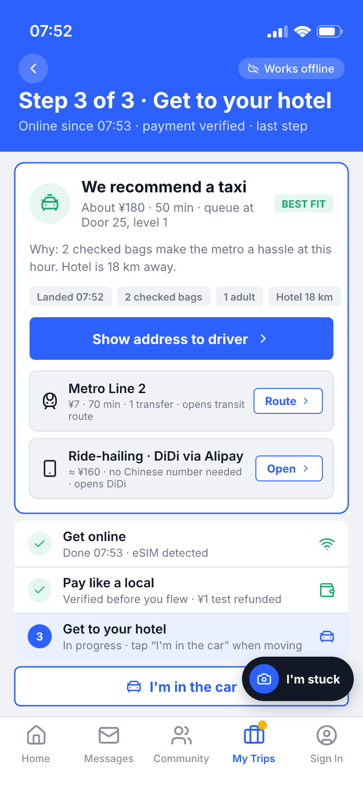

01 / 落地瞬间 · 数据分析 · 需求挖掘
海外旅客到底在聊什么、卡在哪
89.6万官方 Trip.com 英文游记
9.7万筛出涉华讨论
14.9万提取的需求句
3,907真实问题帖
规则化 NLP（problem 信号 · P(类别｜问题) · lift · NMF 聚类，全程无 LLM）归为 13 类需求；我们覆盖的 4 大落地场景占实务问题 51.4%。

门票预约
市内交通
落地机场
支付
上网通讯
换汇花费
签证入境
语言
安全骗局
词越大＝越高频 · 颜色＝类别
数据来源：内部数据 · 2025-10 ～ 2026-10
03 / 落地体验 LIVE EXPERIENCE
落地第一小时：按需求，一件一件做完
场景＝刚落地浦东机场、网络与支付尚未就绪。门票 / 行程预定携程行前已可完成；我们接手落地后的联网 · 支付 · 交通，并随时兜底。

05 / 平台价值 · 商业化
精准触达，场景转化
基于行程信息与实时需求，精准连接 Trip.com 现有旅行服务。
识别需求↓
精准算法推荐↓
服务成交

截图 01 · eSIM 推荐（Trip.com 真实界面）

截图 02 · 交通 / 接送推荐（真实界面）